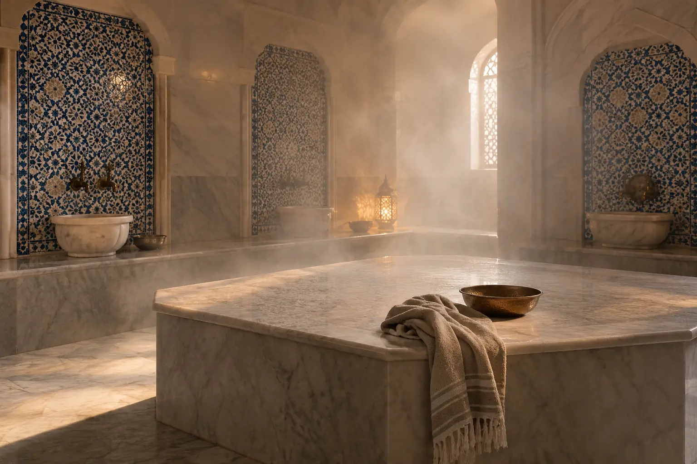

Hamamas, garinė pirtis ir pirtis: kuo skiriasi patirtis ir pasiūlymas?
Autorius: Madbeauty redakcija · Numatyta 2026 m. gruodžio 17 d. 16:00 (Lietuvos laiku)
Palyginkite garinės erdvės naudojimą ir ritualo veiksmus. Konkretaus Vilniaus SPA meniu pavyzdys parodo, kaip skiriasi pasiūlymo apimtis.

Hamamas, garinė pirtis ir pirtis gali reikšti skirtingą erdvę arba paslaugos formatą, tačiau pavadinimas vienas pats nepasako, už ką mokate. Garinės erdvės naudojimas ir atskiras ritualas, pavyzdžiui, šveitimas bei sutepimas, yra skirtingi pasiūlymo komponentai. Palyginkite meniu nurodytus veiksmus, trukmę, kainą ir naudojimosi sąlygas.
Ką gali reikšti šie pavadinimai?
„Hamamas“ gali nusakyti konkrečią pirties aplinką ar ritualo formatą. SPA VILNIUS hamamo aprašyme minimi garai ir marmuro aplinka, tačiau konkretaus pasiūlymo sudėtį reikia vertinti pagal jo meniu įrašą. SPA VILNIUS hamamo meniu.
„Garinė pirtis“ nurodo garinės erdvės formatą, bet pavadinimas neatskleidžia, ar pasiūlymas apima vien naudojimąsi erdve, ar ir vedamą ritualą. „Pirtis“ taip pat gali būti bendras meniu įrašo pavadinimas. Nei vienas iš šių žodžių savaime nepatvirtina papildomų veiksmų, privatumo ar konkrečių apsilankymo sąlygų.
Vieno Vilniaus meniu pavyzdys
2026 m. spalio 10 d. peržiūrėtame SPA VILNIUS Vilniaus meniu atskirai nurodyta turkiška garinė pirtis – 30 min. ir 20 €, Kese šveitimas bei sutepimas – 40 min. ir 60 €. Marokietiškam, „1001 nakties“ ir „Aladino“ ritualams meniu nurodyta po 60 min. ir 90 €.
Šis konkretaus teikėjo meniu parodo apimčių skirtumą: garinės pirties eilutė įvardija erdvę, o kitos eilutės – atskirus kūno ritualus. Jei norite ritualo, patikrinkite, kokius veiksmus jis apima ir kas juos atlieka. Nurodytos kainos yra šio meniu pavyzdys, ne Lietuvos kainų vidurkis; iš jų negalima spręsti apie kitų vietų pasiūlą ar kainodarą.
Trumpas palyginimas prieš pasirenkant
- Jei svarbiausia pati erdvė, patikrinkite, kiek laiko ja galima naudotis, ar apsilankymas privatus ar bendras ir kas įskaičiuota.
- Jei domina vedamas ritualas, ieškokite aiškiai išvardytų veiksmų, jų trukmės ir nurodymo, kas juos atlieka.
- Lygindami kainas patikrinkite, ar meniu nurodo kainą už konkretų apsilankymą, asmenį ar pasirinktą paslaugų sudėtį. Jei vieneto nėra, jo nespėliokite.
- Prieš apsilankymą perskaitykite teikėjo naudojimosi taisykles ir atšaukimo ar rezervacijos sąlygas, jei jos svarbios jūsų pasirinkimui.
Iliustracinė situacija
Tarkime, viename meniu pateikta tik garinės pirties trukmė, o kitame atskirai įvardyti šveitimo ir sutepimo veiksmai. Tai skirtingos apimties pasiūlymai, net jei abu susiję su garais. Prieš rinkdamiesi palyginkite, ar ieškote erdvės naudojimo, ar papildomo ritualo, ir patikrinkite, ką tiksliai apima pasirinktas įrašas.
Procedūrų aprašai kataloge: Pirtis, Hamamas, Garinė pirtis. Miestą ir realaus teikėjo pasiūlymą pasirinkite kataloge, kai tokia pasiūla pateikta.
Susiję gidai
Šaltiniai
- SPA VILNIUS · hamamo ritualų apimtis · www.spavilnius.lt
- NVSC · pirties veiklos sauga · nvsc.lrv.lt
- NCCIH · aromaterapija · www.nccih.nih.gov
- SPA Vilnius: Vilniaus hamamo meniu · www.spavilnius.lt